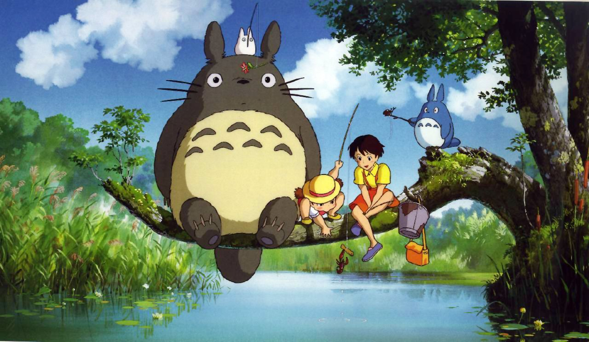
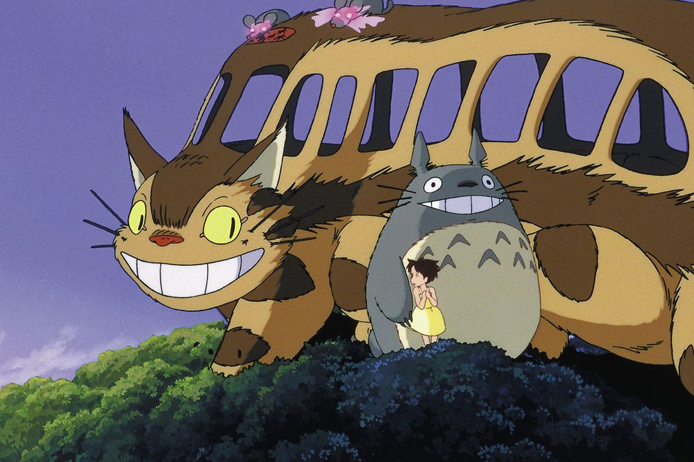

My Neighbor Totoro (Japanese: となりのトトロ, Hepburn: Tonari no Totoro) is a 1988 Japanese animated fantasy film written and directed by Hayao Miyazaki and animated by Studio Ghibli for Tokuma Shoten. The film—which stars the voice actors Noriko Hidaka, Chika Sakamoto, and Hitoshi Takagi—tells the story of a professor's two young daughters (Satsuki and Mei) and their interactions with friendly wood spirits in post-war rural Japan. The film won the Animage Anime Grand Prix prize and the Mainichi Film Award and Kinema Junpo Award for Best Film in 1988. It also received the Special Award at the Blue Ribbon Awards in the same year.
In 1989, Streamline Pictures produced an exclusive dub for use on transpacific flights by Japan Airlines. Troma Films, under their 50th St. Films banner, distributed the dub of the film co-produced by Jerry Beck. This dub was released to United States theaters in 1993, on VHS and laserdisc in the United States by Fox Video in 1994, and on DVD in 2002. The rights to this dub expired in 2004, so it was re-released by Walt Disney Home Entertainment on March 7, 2006[1] with a new dub cast. This version was also released in Australia by Madman on March 15, 2006[2] and in the UK by Optimum Releasing on March 27, 2006. This DVD release is the first version of the film in the United States to include both Japanese and English language tracks.

My Neighbor Totoro received critical acclaim and has amassed a worldwide cult following in the years after its release. The film and its titular character, Totoro, have become cultural icons. The film has grossed over $41 million at the worldwide box office as of September 2019, in addition to generating approximately $277 million from home video sales and $1.142 billion from licensed merchandise sales, adding up to approximately $1.46 billion in total lifetime revenue.
My Neighbor Totoro ranked 41st in Empire magazine's "The 100 Best Films Of World Cinema" in 2010[3] while Totoro was ranked 18th on Empire's 50 Best Animated Film Characters list.[4] A list of the greatest animated films in Time Out ranked the film number 1.[5] A similar list compiled by the editors of Time Out ranked the film number 3.[6] My Neighbor Totoro was also the highest-ranking animated film on the 2012 Sight & Sound critics' poll of all-time greatest films.[7] The character made multiple cameo appearances in a number of Studio Ghibli films and video games and also serves as the mascot for the studio and is recognized as one of the most popular characters in Japanese animation. Totoro was ranked 24th on IGN's top 25 anime characters.[8]